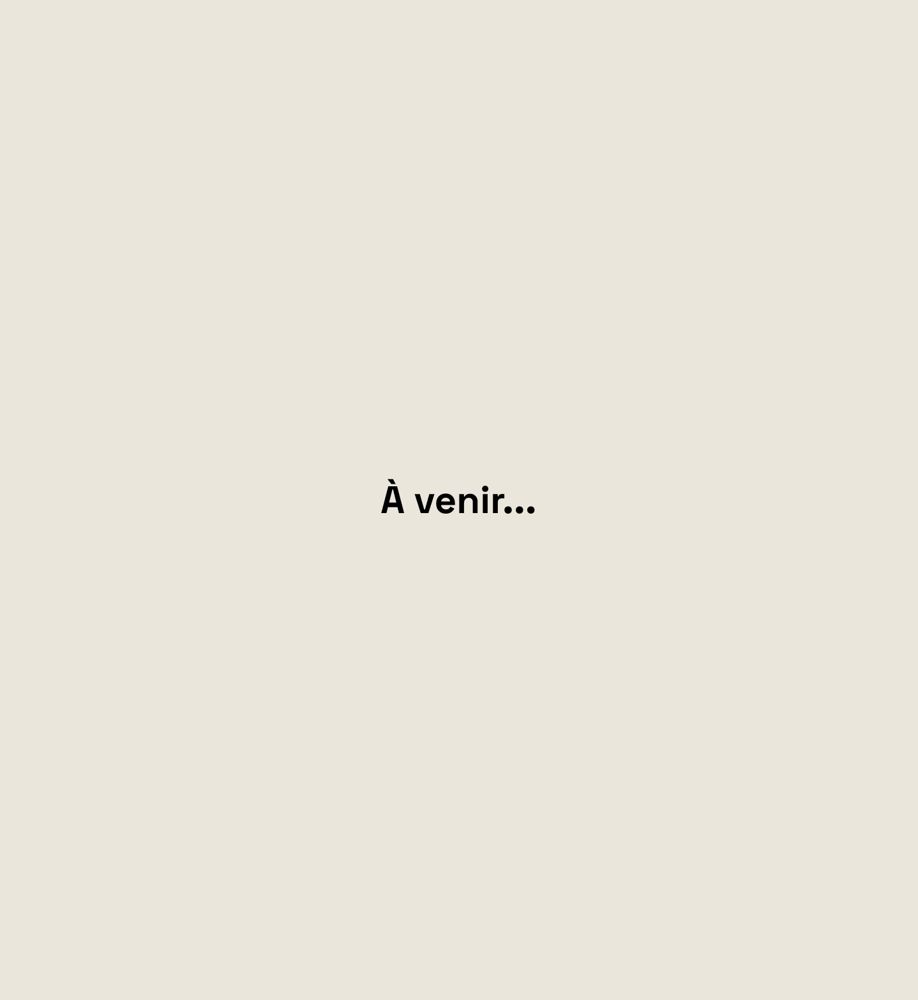

WebJam
Developpement web - Projet scolaire
Intégration et developpement HTML, CSS et JS du site pour le WebJam
Voir le site
À venir... (passer le 12 octobre)
(À voir durant le WebJam (10 et 11 octobre))

À venir...